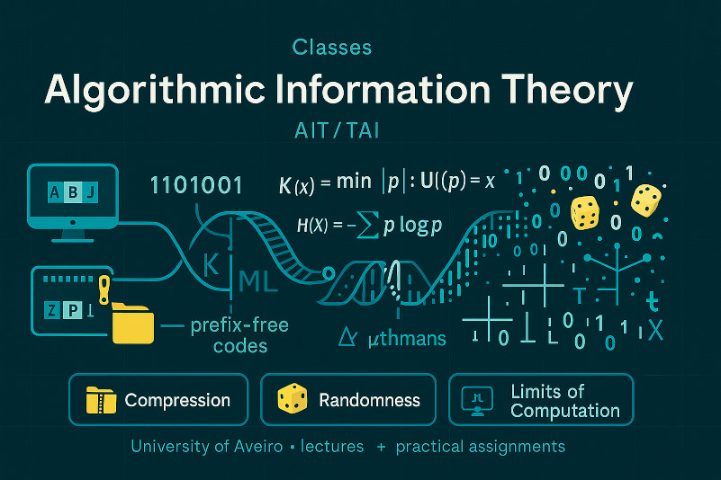

 Algorithmic Information Theory (AIT, or TAI in Portuguese) is a field at the intersection of computer science, mathematics, and information theory that explores how information can be measured, represented, and processed using algorithms. It provides a deep understanding of concepts such as data compression, randomness, machine learning, and the limits of computation. AIT equips students with fundamental tools to reason about what information is, how to model sources of data, and how efficiently data can be encoded or processed. These ideas are essential for anyone working in areas like machine learning, cryptography, data science, and theoretical computer science. The AIT course at the University of Aveiro combines both theoretical and practical components. In addition to lectures, students engage in hands-on learning through three group-based practical assignments, where they apply the concepts studied in class to real problems. This structure helps students to consolidate their understanding and develop collaborative problem-solving skills that are valuable in both research and industry.
TRACESPipe is a hybrid pipeline for efficient reconstruction and analysis of viral and host genomes that can be set at multi-organ level for clinical or aDNA purposes.